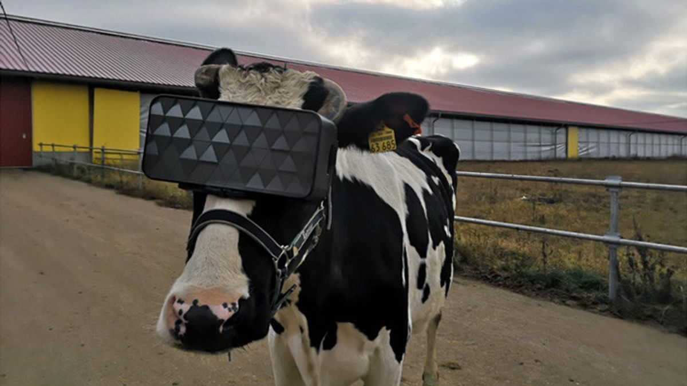
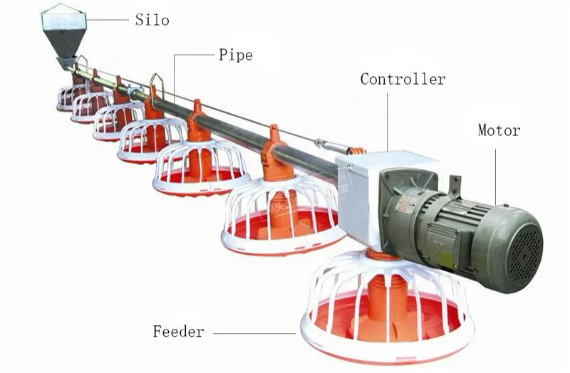
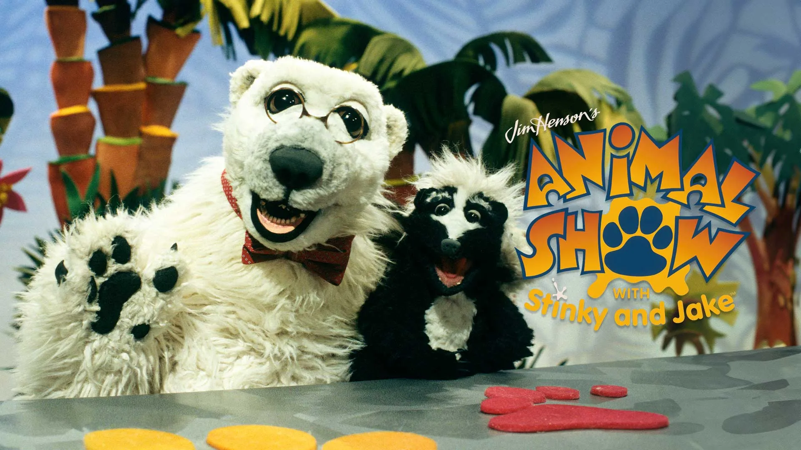

Selamat datang! Mohon bantu kami menjaga kenyamanan satwa dengan tidak memberi makan sembarangan dan membuang sampah pada tempatnya.

Inovasi VR Rain Therapy dikembangkan untuk membantu satwa yang mengalami keterbatasan aktivitas luar ruangan selama musim hujan berkepanjangan. Teknologi ini menghadirkan simulasi habitat alami guna menciptakan kenyamanan dan membantu menurunkan tingkat stres hewan.

Smart Feeding System berbasis Artificial Intelligence diterapkan untuk mengatur kebutuhan nutrisi satwa secara otomatis dan akurat. Sistem ini memastikan setiap hewan memperoleh asupan gizi sesuai kondisi fisiknya serta mendukung pengelolaan yang lebih efisien.

Program pertunjukan edukatif dan sesi pemberian pakan diselenggarakan secara interaktif bagi pengunjung. Melalui konsep hiburan yang dipadukan dengan edukasi, kegiatan ini bertujuan meningkatkan kesadaran terhadap pentingnya konservasi satwa melalui pengalaman belajar yang menyenangkan.